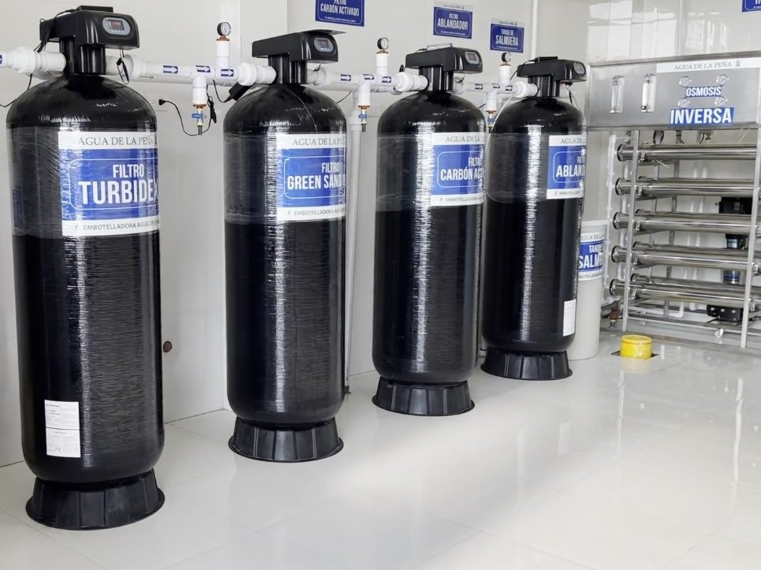
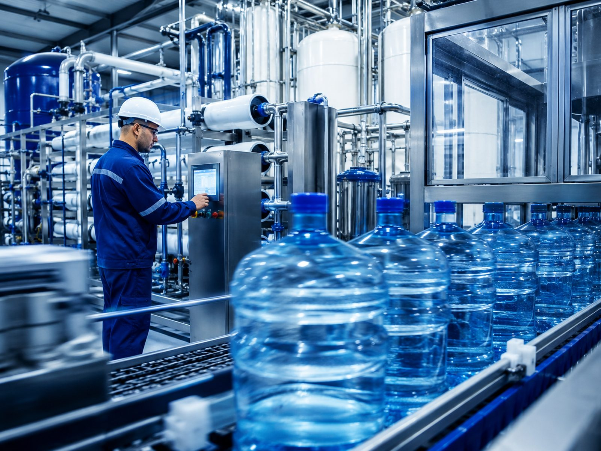

Línea industrial
Ingeniería de agua para procesos de alta exigencia.
Soluciones para plantas, líneas productivas y operaciones técnicas que requieren control, estabilidad, capacidad de respuesta y acompañamiento especializado.

- 01 Mayor capacidad Sistemas pensados para procesos con demanda técnica y caudal constante.
- 02 Escalabilidad real Configuraciones que pueden crecer junto con la operación.
- 03 Control técnico Evaluación, puesta en marcha y respaldo operativo especializado.
Enfoque técnico
Capacidad, proceso, eficiencia y respaldo operativo como parte de una solución seria y escalable.
Alcance técnico
Ideal para industria
-
01
Procesos exigentes
Plantas y sistemas preparados para trabajo continuo y alto desempeño.
-
02
Dimensionamiento técnico
Evaluamos caudal, calidad de agua y objetivo del proceso antes de proponer.
-
03
Soporte especializado
Instalación, ajuste, mantenimiento y seguimiento para continuidad operativa.


Pensado para
Empresas que necesitan control, caudal estable y continuidad.
Empresas que necesitan control de calidad de agua, caudal estable y continuidad en sus procesos.
Ver equipos industrialesRespaldo de marca
- Asesoría responsable Diagnóstico técnico antes de recomendar un equipo.
- Importadores directos Mejor control del portafolio, respaldo y continuidad.
- Más de 10 años de experiencia Trayectoria real en hogar, comercio e industria.
- Cobertura nacional Atención cercana, envíos seguros y soporte postventa.
Catálogo
Equipos y componentes relacionados
 Equipos industriales
Sistemas de alto flujo y configuraciones para procesos complejos.
Abrir página
Equipos industriales
Sistemas de alto flujo y configuraciones para procesos complejos.
Abrir página
 Membranas RO y UF
Procesos de separación, rendimiento y calidad de agua resultante.
Abrir página
Membranas RO y UF
Procesos de separación, rendimiento y calidad de agua resultante.
Abrir página
 UV y ozono
Desinfección avanzada para elevar seguridad microbiológica.
Abrir página
UV y ozono
Desinfección avanzada para elevar seguridad microbiológica.
Abrir página
 Cargas filtrantes
Aplicaciones, beneficios y tipo de medios disponibles.
Abrir página
Cargas filtrantes
Aplicaciones, beneficios y tipo de medios disponibles.
Abrir página
Asesoría ideal